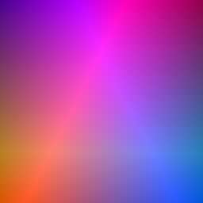
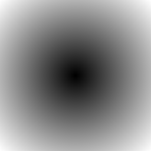
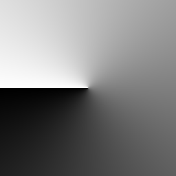
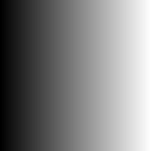

Math¶
-
class
arlunio.math.Barycentric(*, a=0.5, - 0.5, b=0, 0.5, c=- 0.5, - 0.5, x0=0, scale=1, stretch=False, y0=0)[source]¶ Inputs:
width: intheight: intBases:
Barycentric coordinates.
Returns the Barycentric coordinate grid as defined by the given triangle.
-
a¶ The cartesian \((x, y)\) coordinates of the point \(a\)
-
b¶ The cartesian \((x, y)\) coordinates of the point \(b\)
-
c¶ The cartesian \((x, y)\) coordinates of the point \(c\)
-
-
class
arlunio.math.Cartesian(*, x0=0, scale=1, stretch=False, y0=0)[source]¶ Inputs:
width: intheight: intBases:
Cartesian coordinates.
-
class
arlunio.math.Polar(*, x0=0, scale=1, stretch=False, y0=0, t0=0)[source]¶ Inputs:
width: intheight: intBases:
Polar coordinates.
-
class
arlunio.math.R(*, x0=0, scale=1, stretch=False, y0=0)[source]¶ Inputs:
width: intheight: intBases:
Polar \(r\) coordinates.
This definition corresponds with the distance a given point is from the origin and can be calculated from the point’s equivalent Cartesian coordinate representation
\[r = \sqrt{x^2 + y^2}\]Examples
>>> from arlunio.math import R >>> r = R() >>> r(width=5, height=5) array([[1.41421356, 1.11803399, 1. , 1.11803399, 1.41421356], [1.11803399, 0.70710678, 0.5 , 0.70710678, 1.11803399], [1. , 0.5 , 0. , 0.5 , 1. ], [1.11803399, 0.70710678, 0.5 , 0.70710678, 1.11803399], [1.41421356, 1.11803399, 1. , 1.11803399, 1.41421356]])
While this definition does not currently have any attributes of its own, since it’s derived from the
arlunio.math.Xandarlunio.math.Ydefinitions it automatically inherits the attributes from these base definitions:>>> r = R(x0=-2, y0=-2, scale=2) >>> r(width=5, height=5) array([[4. , 4.12310563, 4.47213595, 5. , 5.65685425], [3. , 3.16227766, 3.60555128, 4.24264069, 5. ], [2. , 2.23606798, 2.82842712, 3.60555128, 4.47213595], [1. , 1.41421356, 2.23606798, 3.16227766, 4.12310563], [0. , 1. , 2. , 3. , 4. ]])
Notice how in the case where the base definitions share a attribute (
scalein this case) they both share the value that is set when creating an instance of theRdefinition.
-
class
arlunio.math.T(*, t0=0, x0=0, scale=1, stretch=False, y0=0)[source]¶ Inputs:
width: intheight: intBases:
Polar \(\theta\) coordinates.
This definition corresponds with the angle a given point is around from the positive \(x\)-axis. This can be calculated from the point’s equivalent Cartesian coordinate representation. All angles are given in radians
\[t = atan2\left(\frac{y}{x}\right)\]-
t0¶ Shift all the coordinate values by
t0
Examples
By default all point on the \(x\)-axis will have a value of
t = 0:>>> from arlunio.math import T >>> t = T() >>> t(width=5, height=5) array([[ 2.35619449, 2.03444394, 1.57079633, 1.10714872, 0.78539816], [ 2.67794504, 2.35619449, 1.57079633, 0.78539816, 0.46364761], [ 3.14159265, 3.14159265, 0. , 0. , 0. ], [-2.67794504, -2.35619449, -1.57079633, -0.78539816, -0.46364761], [-2.35619449, -2.03444394, -1.57079633, -1.10714872, -0.78539816]])
This can be changed however with the
t0attribute:>>> from math import pi >>> t.t0 = pi >>> t(width=5, height=5) array([[-0.78539816, -1.10714872, -1.57079633, -2.03444394, -2.35619449], [-0.46364761, -0.78539816, -1.57079633, -2.35619449, -2.67794504], [ 0. , 0. , -3.14159265, -3.14159265, -3.14159265], [-5.8195377 , -5.49778714, -4.71238898, -3.92699082, -3.60524026], [-5.49778714, -5.17603659, -4.71238898, -4.24874137, -3.92699082]])
Also, being a definition derived from
arlunio.math.Xandarlunio.math.Ythe attributes for these definitions are also available to control the output:>>> t = T(x0=-2, y0=-2, scale=2) >>> t(width=5, height=5) array([[1.57079633, 1.32581766, 1.10714872, 0.92729522, 0.78539816], [1.57079633, 1.24904577, 0.98279372, 0.78539816, 0.64350111], [1.57079633, 1.10714872, 0.78539816, 0.5880026 , 0.46364761], [1.57079633, 0.78539816, 0.46364761, 0.32175055, 0.24497866], [0. , 0. , 0. , 0. , 0. ]])
-
-
class
arlunio.math.X(*, x0=0, scale=1, stretch=False)[source]¶ Inputs:
width: intheight: intCartesian \(x\) coordinates.
-
x0¶ Shift all the coordinate values by
x0
-
scale¶ Controls the magnitude of the extreme values.
-
stretch¶ If
Trueand the image is wider than it is tall then the grid will be stretched so thatx = scalefalls on the image border. Otherwise the image’s aspect ratio will be taken into account andx = scalewill fall somewhere within the boundaries of the image.
Examples
By default values will be generated between \(\pm 1\):
>>> from arlunio.math import X >>> x = X() >>> x(width=4, height=4) array([[-1. , -0.33333333, 0.33333333, 1. ], [-1. , -0.33333333, 0.33333333, 1. ], [-1. , -0.33333333, 0.33333333, 1. ], [-1. , -0.33333333, 0.33333333, 1. ]])
If however the image is wider than it is tall this range will be extended so that the resulting image is not stretched:
>>> x(width=4, height=2) array([[-2. , -0.66666667, 0.66666667, 2. ], [-2. , -0.66666667, 0.66666667, 2. ]])
This behaviour can be disabled with the
stretchattribute:>>> x.stretch = True >>> x(width=4, height=2) array([[-1. , -0.33333333, 0.33333333, 1. ], [-1. , -0.33333333, 0.33333333, 1. ]])
Additionally the
scaleattribute can be used to adjust the magnitude of the extreme values generated, while thex0attribute can be used to shift all the values by a given amount:>>> x = X(x0=-2, scale=2) >>> x(width=4, height=4) array([[0. , 1.33333333, 2.66666667, 4. ], [0. , 1.33333333, 2.66666667, 4. ], [0. , 1.33333333, 2.66666667, 4. ], [0. , 1.33333333, 2.66666667, 4. ]])
-
-
class
arlunio.math.Y(*, y0=0, scale=1, stretch=False)[source]¶ Inputs:
width: intheight: intCartesian \(y\) coordinates
-
y0¶ Shift all the coordinate values by
y0
-
scale¶ Controls the size of the extreme values
-
stretch¶ If
Trueand the image is taller than it is wide then the grid will be stretched so thaty = scalefalls on the border. Otherwise the image’s aspect ratio will be taken into account andy = scalewill fall somewhere within the boundaries of the image.
Examples
By default values will be generated between \(\pm 1\):
>>> from arlunio.math import Y >>> y = Y() >>> y(width=4, height=4) array([[ 1. , 1. , 1. , 1. ], [ 0.33333333, 0.33333333, 0.33333333, 0.33333333], [-0.33333333, -0.33333333, -0.33333333, -0.33333333], [-1. , -1. , -1. , -1. ]])
If however the image is taller than it is wide this range will be extended so that the resulting image is not stretched:
>>> y(width=2, height=4) array([[ 2. , 2. ], [ 0.66666667, 0.66666667], [-0.66666667, -0.66666667], [-2. , -2. ]])
This behaviour can be disabled with the
stretchattribute:>>> y.stretch = True >>> y(width=2, height=4) array([[ 1. , 1. ], [ 0.33333333, 0.33333333], [-0.33333333, -0.33333333], [-1. , -1. ]])
Additionally the
scaleattribute can be used to adjust the magnitude of the extreme values generated, while they0attribute can be used to shift all the values by a given amount:>>> y = Y(y0=-2, scale=2) >>> y(width=4, height=4) array([[4. , 4. , 4. , 4. ], [2.66666667, 2.66666667, 2.66666667, 2.66666667], [1.33333333, 1.33333333, 1.33333333, 1.33333333], [0. , 0. , 0. , 0. ]])
-
-
arlunio.math.clamp(vs, min_=0, max_=1)[source]¶ Force an array of values to stay within a range of values.
- Parameters
vs – The array of values to clamp
min – The minimum value the result should contain
max – The maximum value the result should contain
Examples
By default values will be limited to between
0and1>>> from arlunio.math import clamp >>> import numpy as np >>> vs = np.linspace(-1, 2, 6) >>> clamp(vs) array([0. , 0. , 0.2, 0.8, 1. , 1. ])
But this can be changed with extra arguments to the
clampfunction>>> clamp(vs, min_=-1, max_=0.5) array([-1. , -0.4, 0.2, 0.5, 0.5, 0.5])
-
arlunio.math.lerp(start: float = 0, stop: float = 1) → Callable[[float], float][source]¶ Return a function that will linerarly interpolate between a and b.
- Parameters
start – The value the interpolation should start from.
stop – The value the interpolation should stop at.
Examples
By default this function will interpolate between
0and1>>> from arlunio.math import lerp >>> f = lerp() >>> f(0) 0 >>> f(1) 1
However by passing arguments to the
lerpfunction we can change the bounds of the interpolation.>>> import numpy as np >>> ts = np.linspace(0, 1, 4) >>> f = lerp(start=3, stop=-1) >>> f(ts) array([ 3. , 1.66666667, 0.33333333, -1. ])